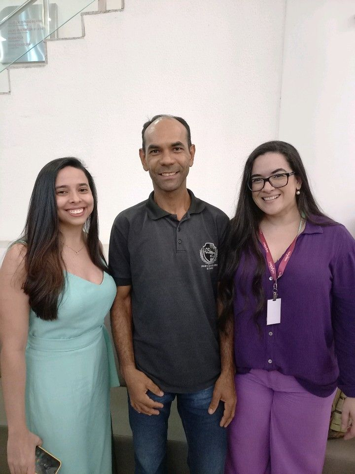

Palestras na Unifavip Wyden
Apresentação da Palestra Doutorando Sebastião Rogério
Tema: Versionamento em Git com o mestre Igor Teixeira
Diretrizes de Trabalho
Mercado de trabalho
Versões

Lei Geral de Proteção de Dados(LGPD) e Crimes Virtuais
Doutora Aêda Souza e Mestre Nathalia Barroca
Tipos de Crimes Virtuais
Como se precaver dessas ameaças
Quais são as punições para quem as pratica
Centro Universitário Unifavip Wyden
Disciplina : Desenvolvimento Web
Professor: Doutorando - Kayo Monteiro
Aula Prática - Formulários